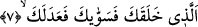

çekip gittiler. Kadın iki elini göğe açıp duâ etmeye başladı. Duasını bitirdikten sonra
güldü ve oradan ayrıldı. Bu kadının peşine takıldım ve dedim ki: Bu olayın içyüzünü
bana mutlaka anlatmalısın. Kadın: Ölen oğlumdu, dünyada iken işlemedik hiçbir günah
bırakmadı. Sonra hastalanıp üçgün yatakta yattı. Oğlum bana dedi ki: Ey anne! Ben
ölünce komşularımıza öldüğümü haber verme. Çünkü onlar benim ölümümle sevinirler
ve cenazeme gelmezler. Öldüğümde yüzüğüme “la ilahe illallah muhammedun
resullullah” ifâdesini yazdır ve bunu parmağıma tak. Sonra ayağını yanağımın üzerine
basarak deki: Allahına isyan edenin cezâsı işte budur. Beni toprağa verdiğin zaman
ellerini semaya kaldır ve şöyle duâ et: Allah’ım! Ben bu çocuktan hoşnudum sen de
ondan hoşnud ol! Kadın şöyle devam etti: “Oğlum ölünce bana vasiyet ettiği bütün
hususları yerine getirdim. Elimi semaya açıp duâ ettiğimde gâyet açık ve net bir dille
oğlumun sesini işittim. Bana; “artık dönüp gidebilirsin anneciğim! Ben kerîm ve rahîm
olan Rabbin huzuruna geldim, benden hoşnud oldu” dediğini işittim. İşte mezarlıkta
çocuğumun bu hâline sevincimden gülüyordum dedi. Bu hikâyeyi İmam Kuşeyri
Şerhu’l-esma isimli eserinde nakleder.
Bir sahih hadiste Peygamberimiz (s.a.) şöyle buyurur: “Allah Teâlâ mü’min kulunu
yaklaştırır, üzerine rahmet perdesini koyar ve: “Şu günahı biliyor musun?’ diye
sorar. Kul: ‘evet ya Rabbi’ der. Böylece Allah Teâlâ ona bütün günahlarını itiraf
ettirir. Kul artık helâk olmasının kesin olduğu kanâatine varır. Allah Teâlâ ise ona
şöyle buyurur: Dünyada bu günahlarını örttüm, bugün de onları senin hatırın için
affediyorum.” [39]
7. Seni yaratıp, seni düzgün ve uyumlu kılan,
“Seni yaratıp” ifâdesi, Allah Teâlâ’nın rablığını ortaya koyan ikinci sıfattır ve ayrıca
O’nun ihsanını beyân etmektedir. Çünkü; “halk/yaratmak” fiili “vücud vermek” demek
olup bu, yokluktan daha hayırlıdır. Öte yandan “yaratma” sıfatı; “ilk baştan yaratmaya
ve onu izleyen diğer olaylara kadir olanın, yaratmayı günü gelince yeniden yapabileceği
gerçeğine” dikkatleri çekmektedir. Bir başka ifâdeyle burada Allah, insanoğluna hitap
ederek: “Bir zamanlar hiç bir şey değil iken onu yoktan var ettiğine” dikkat çekmektedir.
Allah’ın yaratma sıfatından sonra “sevvâke” fiili getirilmiştir. Bu fiilin anlamı; “o
senin organlarını düzgün, kendisinden beklenilen görevleri yapmaya hazır ve sağlam
kıldı” demektir. Organları öylesine hazır hale getirdi ki her organ ne için yaratılmış ise
o yararı sağlayabilmektedir. Söz gelimi; elin tutmak, ayağın yürümek, dilin konuşmak,
gözün görmek, kulağın işitmek vb. görevleri kusursuzca yerine getirmiş olması gibi.
Âyette daha sonra “adelek” fiili gelmektedir. Bunun anlamı; bu organlardan bazılarını
diğerlerine eşit kıldı, demektir. Bir başka ifâdeyle iki organı, biri diğerinden farksız